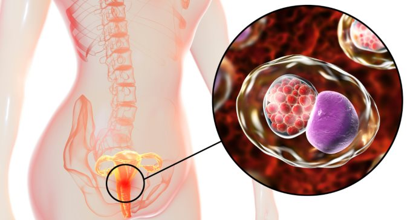
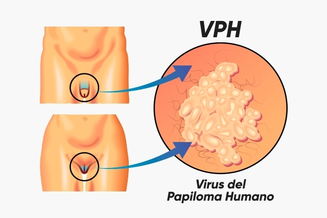
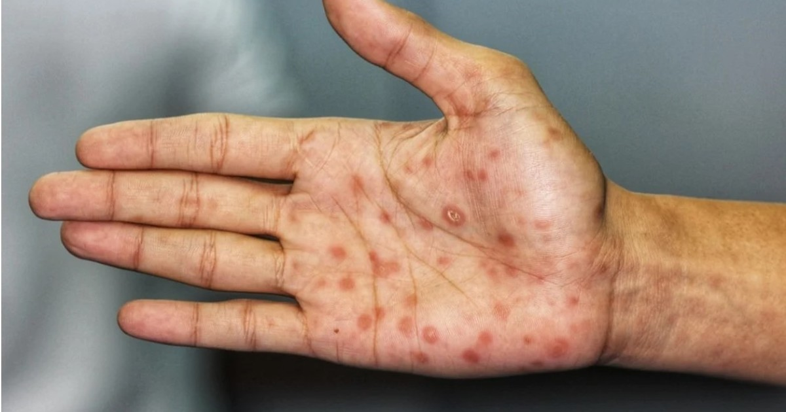

Definicion de una ITS
Son infecciones que se transmiten de una persona a otra durante una relacion sexual
Existen mas de 20 tipos de ITS
Mas informacionSon infecciones que se transmiten de una persona a otra durante una relacion sexual
Existen mas de 20 tipos de ITS
Mas informacionPara prevenir estas enfermedades podes hacer varias cosas y entre algunas son:
acudir con un doctor especializado(Ginecologo o urologo)
No automedicarse
Es importante la comunicacion con la pareja, los dos deben asistir a
algun especialista

Cualquier persona puede contraer una its
Mas informacionCausada por la bacteria Chlamydia trachomatis
los sintomas son
Ardor al orinar
Flujo vaginal anormal, entre otros
Puede aparecer en recto, utero y uretra
Mas informacionEs la infección de transmisión sexual más común
Y puede estar relacionado con algunos tipos de cáncer
Puede haber sintomas como
Cansancio
Fiebre
Diarrea
Perdida de peso
Entre otros
Mas informacionAl haber contraido esta infección puede haber complicaciones antes y/o despues de un embarazo
Los sintomas son:
En hombres
secrecion del pene
dolor o inchazon de un testiculo
En mujeres
dolor abdominal
tricomoniasis
Mas informacion